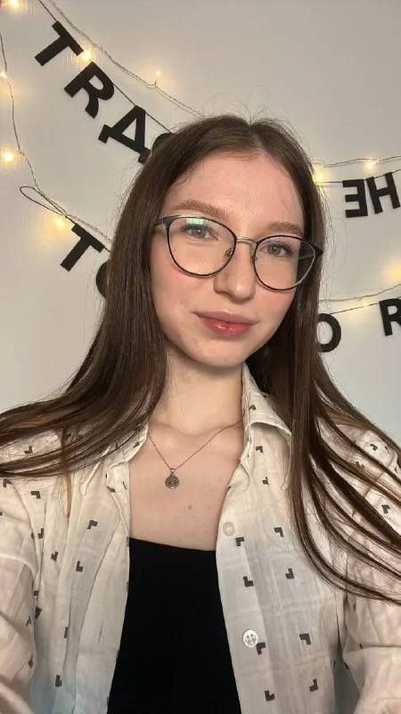
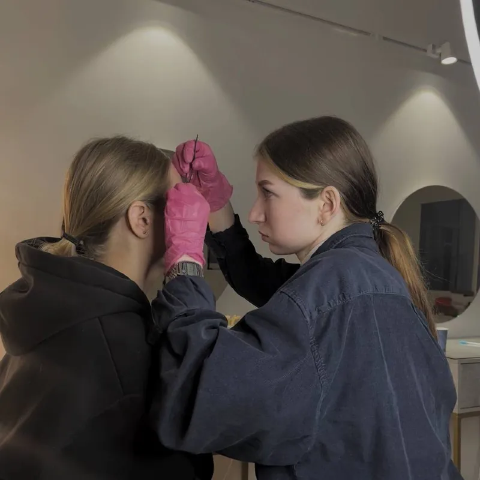

Коррекция бровей
Построение формы, круговая коррекция воском и пинцетом, прореживание при необходимости
Brow-мастер · Санкт-Петербург
Делаю аккуратные естественные брови и ламинирование ресниц в ЖК «Зелёный квартал» у Пулковского шоссе.
Работаю под ваш запрос: спрашиваю о пожеланиях, а перед коррекцией убеждаюсь, что форма вам нравится.
С чем приходят
Услуги и цены
Цены актуальны и совпадают с онлайн-записью. Они указаны «от»: итоговую стоимость уточняйте у мастера.
Построение формы, круговая коррекция воском и пинцетом, прореживание при необходимости
Построение формы, коррекция воском и пинцетом, окрашивание краской в тон волос или в желаемый оттенок
Построение формы, коррекция, прореживание или осветление с окрашиванием, уход-ботокс при необходимости
Построение формы, коррекция, прореживание и осветление с окрашиванием, уход-ботокс
Ламинирование, построение формы, коррекция воском и пинцетом, прореживание при необходимости, уход-ботокс
Ламинирование, построение формы, коррекция, прореживание при необходимости, окрашивание, уход-ботокс
Если не знаете, что выбрать. Начинаем с консультации: я расскажу, что можно сделать с вашими бровями. От выбранной процедуры зависит итоговая цена
Можно добавить к любой процедуре
Яркий изгиб ресниц, окрашивание, уход-ботокс. Эффект держится до 2 месяцев
Окрашивание верхних и, по желанию, нижних ресниц, уход-ботокс
Снятие наращенных ресниц, уход-ботокс
Коррекция и окрашивание бровей, ламинирование и окрашивание ресниц, уход-ботокс
Коррекция, окрашивание и ламинирование бровей, ламинирование и окрашивание ресниц, уход-ботокс
Если хотите и брови, и ресницы, но не знаете, что именно. Начинаем с консультации: я расскажу, что можно сделать. От выбранных процедур зависит итоговая цена
Работы
На многих фото сверху «до», снизу «после». Нажмите, чтобы увеличить.
Запись
В онлайн-записи или в сообщении мне в Telegram.
В день записи. Предоплата входит в стоимость услуги, запись подтверждается после неё.
Добавьте мой номер +7 908 263-83-13 в контакты или укажите свой ник через @ при записи.
Обсудим форму и оттенок, сделаю процедуру и подскажу, как ухаживать за бровями и ресницами дома.
Если планы изменились: предупредите меня не позднее чем за 24 часа. При отмене или переносе позже предоплата не возвращается.
О мастере

Я brow-мастер: делаю коррекцию, окрашивание, осветление и ламинирование бровей, а ещё ламинирование и окрашивание ресниц.
Брови люблю с 2016 года: тогда я начала красить свои, потом друзьям, и поняла, что хочу заниматься этим профессионально. Прошла обучение на бровиста, а в начале 2024 года отдельно отучилась на ламинирование ресниц.
[ЗАПОЛНИТЬ: фото сертификатов и названия обучений]

Отзывы
Отзывы с Яндекс Карт, страницы онлайн-записи и Telegram-канала, без изменений по смыслу.
Мастер бровист Рита профессионал своего дела, сделала чудесные брови и посоветовала уход и укладку.
Лучший мастер по бровям и ресницам. Всё аккуратно и красиво. Даёт дельные рекомендации по уходу и состоянию волосков и ресниц.
Хотелось бы поблагодарить мастера Маргариту за чудесные ресницы, выглядит будто наращивание сделано, а не просто ламинирование.
Попадание мастера в моё ТЗ: 10000/10! Хотелось сделать брови более подходящего цвета к волосам, чуть пошире и воздушнее. Боялась менять цвет, но Маргарита сделала всё просто идеально!
Очень быстро и качественно провела коррекцию и окрашивание бровей. Благодарю за мои брови, теперь они выглядят естественно и привлекательно.
Если у вас пока нет представлений о том, какая форма и цвет бровей вам подходит, Маргарита поможет, предложит несколько вариантов, и вы вместе придёте к замечательному результату.
Мастер Маргарита профессионал своего дела! Брови получились восхитительные. Обязательно вернусь сюда ещё не раз!
Спасибо Рите за результат, который я хотела, и за мягкую и профессиональную работу.
Огромное спасибо за профессиональный подход, уважение и реализацию моих пожеланий. Прекрасный результат для моего образа. Очень довольна своими новыми бровями.
Рита делает чудесные брови и ресницы. Приятная студия и беседа обеспечены. Однозначно рекомендую.
Была на бровях у Риты. Всё очень понравилось. Работа красивая.
Запишитесь на услугу «Хочу красивые брови» (от 1 900 ₽) или «Хочу красивые брови и ресницы» (от 4 200 ₽). Сначала будет консультация: я расскажу, что можно сделать, и вы выберете процедуру. От этого зависит итоговая цена. Можно и просто написать мне в Telegram с вопросом.
Эффект держится до 2 месяцев, и всё это время можно обходиться без туши и кёрлера. Сама процедура ламинирования длится около 50 минут, вместе с окрашиванием и уходом запись занимает 1 час 15 минут.
Перед процедурой я спрашиваю, какие процедуры вы делали раньше и были ли реакции. Если вы впервые у бровиста или пробуете новую процедуру, сначала делаем тест на чувствительность. Если у вас уже была аллергия, обязательно скажите об этом при записи.
Это уходовый состав для волосков бровей и ресниц, который наносится в конце процедуры. Он уже входит в стоимость услуг, где указан.
Да. Предоплата вносится в день записи и входит в стоимость услуги. Запись подтверждается после предоплаты.
Напишите мне в Telegram не позднее чем за 24 часа до начала. Если отменить или перенести запись позже, предоплата не возвращается.
Из-за блокировки WhatsApp подтверждения я отправляю в Telegram. Добавьте мой номер +7 908 263-83-13 в контакты или укажите ник через @ при записи.
Наличными или банковским переводом.
Адрес
Работаю по записи. Свободное время на ближайшие дни смотрите в онлайн-записи или в Telegram-канале.
ЖК «Зелёный квартал»
1 этаж, студия «Рядом». Есть парковка, велопарковка и пандус, можно прийти с питомцем.
Открыть на картеОнлайн-запись открыта
Выберите услугу и время онлайн или напишите мне, если остались вопросы.